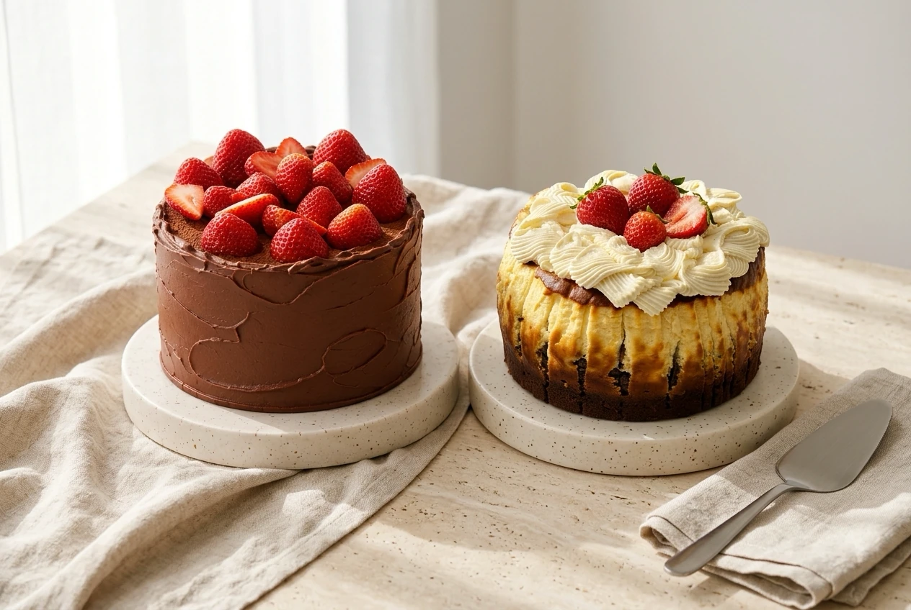
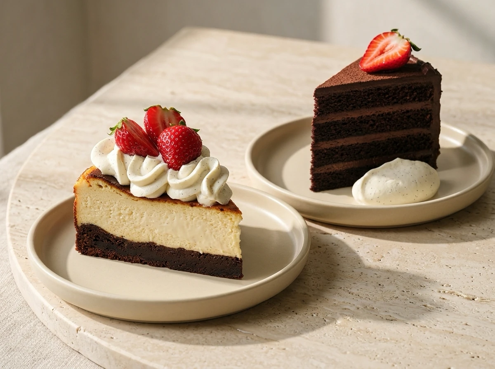
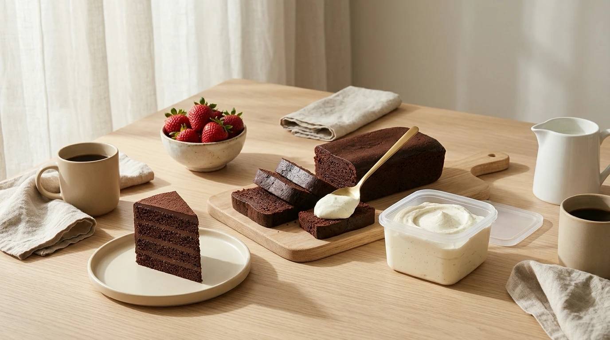

VERYGOOD JOURNAL · CAKE GUIDE · FINISHES & PAIRINGS
A practical guide to pairing fresh strawberries, whipped real vanilla-bean cream, or a separate 100g cream box with Pavé whole cakes, Brownie Basque cheesecakes and signature loaves in Sydney.
Even when two celebrations start with the exact same cake base, the finish on top completely changes how the dessert looks on the table and feels on the palate. Serving a dark chocolate Pavé cake or Brownie Basque cheesecake in its Basic form highlights pure texture—while fresh strawberries or real vanilla-bean fresh cream bring lightness and celebration lift.
Choosing the right topping is about balancing deep cocoa intensity,[20][26] matching mixed guest preferences and keeping every slice clean from Melrose Park pickup to the table.
KEY TAKEAWAY · MATCH THE FINISH TO THE PALATE & TABLE
Choose Fresh Strawberries to cut dark chocolate richness with bright acidity, Real Vanilla-Bean Fresh Cream to soften dense brownie and cheesecake layers, or add a Separate 100g Vanilla Cream box so every guest can spoon cold cream onto their own slice.

Rich dark chocolate emulsions[20] and caramelised Basque cheesecakes[14] deliver deep roasted cocoa notes and velvety dairy weight. Adding a contrasting top finish reshapes the tasting curve in three distinct ways:[26]
FLAVOUR BALANCE · THREE WAYS TO FINISH A CHOCOLATE CAKE
OPTION 01 · PURE BASE
Basic Finish
No added cream or fruit—lets dense Pavé ganache,[20] two-layer Brownie Basque[14] or Gâteau crumb stand cleanly on its own.
Best for espresso pairings & pure chocolate fans.
OPTION 02 · BRIGHT LIFT
Fresh Strawberries
Juicy, natural strawberry acidity cuts cleanly through rich dark chocolate,[26] refreshing the palate without adding heaviness.
Available on Pavé Whole & Brownie Basque Whole.
OPTION 03 · AIRY CUSHION
Real Vanilla-Bean Cream
Whipped fresh cream speckled with real vanilla seeds softens rich brownie and Basque edges—alone or paired with fresh strawberries.
Available topped or in a Separate 100g box.
Each cake in our Sydney menu is matched with finishes that suit its structure: Pavé Whole Cakes (4" to 10") come in Basic or Fresh Strawberries; Brownie Basque Whole Cakes offer Basic, Vanilla Fresh Cream, or Vanilla Fresh Cream + Strawberries; and both our Brownie Basque Loaf and Signature Gâteau Loaf can be crowned with Vanilla Fresh Cream (with Extra Chocolate also offered on the Gâteau Loaf).
Want cool vanilla cream alongside a dark Pavé Whole Cake—or hosting guests who prefer to choose their own cream ratio? Add our Separate Vanilla Cream · 100g box so everyone can spoon cold, vanilla-speckled cream onto their slice at the table.

SERVING STRATEGY · TOPPED ON THE CAKE VS. SEPARATE 100G CREAM BOX
TOPPED ON THE CAKE · READY TO PRESENT
Centrepiece Impact Straight From the Box
Best for birthdays, candle moments and milestone photos. Brownie Basque Whole Cakes (Cream or Cream + Strawberries), Pavé Whole Cakes (Fresh Strawberries) and Cream-Topped Loaves arrive styled and table-ready.
SEPARATE 100G BOX · FLEXIBLE HOSTING
Spoon Chilled Vanilla Cream at the Table
Best when pairing fresh cream with a Pavé Whole Cake, pleasing both dark-chocolate purists and cream lovers, or slicing clean neat wedges before adding cool vanilla-bean cream onto each plate.
Whipped real cream and whole ripe strawberries are delicate chilled finishes. Following a few simple cold-chain and slicing habits keeps every layer sharp from Melrose Park pickup to the final plate:
FRESH CREAM & STRAWBERRY CARE · FOUR ESSENTIAL HABITS
• Keep chilled at 5 °C or below: Transport cream-topped cakes and separate 100g cream boxes in an insulated cooler bag with ice packs on warm Sydney days and refrigerate promptly.[7][24]
• Respect Australia’s 2-hour / 4-hour rule: Return cream-topped leftovers promptly to the fridge rather than leaving dairy cream sitting out across a warm afternoon.[24]
• Enjoy fresh strawberries promptly: Whole ripe strawberries naturally release moisture over time, so strawberry-topped cakes look and taste crispest on pickup day.
• Warm and wipe your knife: Nudge whole berries aside along your cut line, dip a thin sharp knife in hot water and wipe dry between cuts so ganache, cheesecake and cream stay crisp.[17]
DAIRY & ALLERGEN REMINDER · FSANZ TRANSPARENCY
Our chocolate cakes, Basque cheesecakes and real vanilla-bean fresh cream contain dairy and other allergens, and are prepared in a kitchen handling nuts, wheat, eggs and soy. Always review product details or check with our team before ordering for guests with food allergies.[23]

VERYGOOD CHOCOLATE · MELROSE PARK PICKUP · SYDNEY
Explore our Sydney Cake collection — Pavé Whole Cakes, Brownie Basque Whole Cakes and Signature Loaves — with Fresh Strawberries, Real Vanilla-Bean Fresh Cream or a Separate 100g Vanilla Cream box prepared to order for pickup in Melrose Park.
[7] https://www.foodstandards.gov.au/business/food-safety/transporting-food-safely — FSANZ — Transporting food safely
[14] https://www.kingarthurbaking.com/recipes/basque-cheesecake-tarta-de-queso-recipe — King Arthur Baking — Basque Cheesecake (Tarta de Queso)
[17] https://www.lamanna.com.au/cake-cutting-guide — LaManna Patisserie (Australia) — Cake Cutting Guide
[20] https://www.valrhona.com/en/l-ecole-valrhona/discover-l-ecole-valrhona/chocolate-terminology/chocolate-emulsion — Valrhona — Chocolate emulsion
[23] https://www.foodstandards.gov.au/consumer/labelling/allergen-labelling — FSANZ — Allergen labelling for consumers
[24] https://www.foodstandards.gov.au/business/food-safety/2-hour-4-hour-rule — FSANZ — 2-hour / 4-hour rule
[26] https://www.callebaut.com/en/products/taste-wheel — Callebaut — Chocolate taste wheel